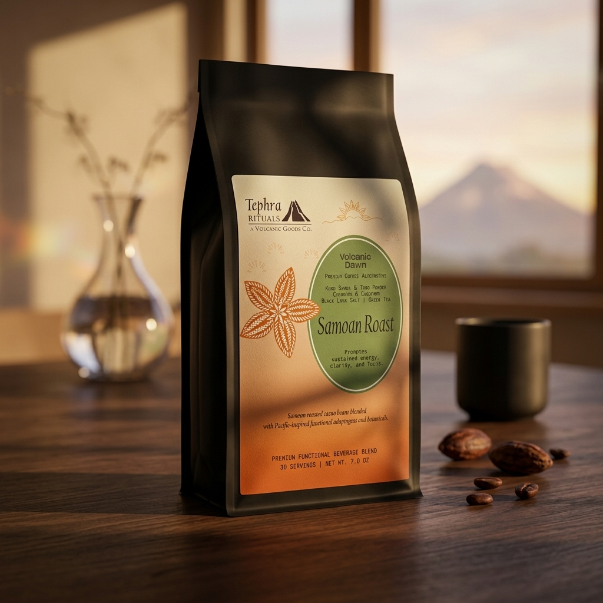

Volcanic Dawn
Samoan Roast
Promotes sustained energy, clarity, and focus.
KOKO SAMOA | TARO POWDER | CINNAMON | CARDAMOM | BLACK LAVA SALT | GREEN TEA
A Bold, Textured Awakening
Volcanic Dawn opens with the deep, robust bittersweetness of pure, dark-roasted Samoan Kacao, yielding a complex foundation of woodsmoke and dark molasses. This intense earthiness is immediately brightened by the warm, aromatic snap of Ceylon cinnamon and the sharp, exotic citrus-herbal notes of green cardamom. The blend rounds out with an exceptionally subtle savory finish, where mineral-rich black lava salt cuts through the bitterness, elevating the natural cacao oils and adding a fleeting, pristine oceanic crispness to the palate.
Viscous, substantial, and incredibly smooth. The inclusion of taro root lends a velvety, natural starch thickness that mimics the luxurious body of a heavy cream latte without dairy. It coats the palate evenly, leaving a clean, non-astringent finish that feels grounding and deeply satisfying.
PREMIUM FUNCTIONAL BEVERAGE BLEND
30 SERVINGS | NET WT. 7.0 OZ